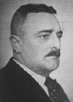
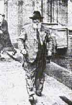
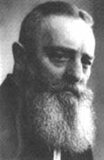

the VORTEX WORLD
who was Viktor Shauberger
|
||
by Morten Ovesen, the Malmö group |
||
A brief biography could be like this: Viktor Schauberger was an Austrian forester who was active during the first half of the 19:th century. He had a huge beard and a friendly laughter, this he combined with an uncompromising belief in himself and his ideas. He was obstinate in combination with a choleric temper. He was a good drawer and probably a skilled craftsman. Even if Viktor was not schooled the academic way he had a deep knowledge in biology, physics and chemistry. His sense and understanding on how water flows in the nature was exceptional. From his observations he formulated his new hydrodynamic basic theory. His friends and opponents described him as highly intelligent and with this intellectual sharpness he made a deep cut in his (and ours) physical paradigm.
Viktor Schauberger made his first tentative efforts during his childhood. His highest wish was to follow in the footsteps of his forefathers and become a forester in the primeval-like forests that could be found in Austria in the end of the 18:th century. During his long walkabouts in the deep forest it was the water that first of all caught his attention. Small creeks and rivers were animated for him. The revolution of the water appeared as much more complex than the established knowledge explained. He meant that the water streams were the blood of the earth, and the smallest deviation in the temperature could be compared to the deviations seen in human blood. Fresh water makes it's own winding way in the nature and by doing this it builds up an internal movement that gathers more power than the man is able to measure. He proved this internal power by designing long winding floating canals that were able to float huge timber logs using just a small amount of water. Along these canals, ingenious water exchange stations were placed. In these stations fresh cool water was refilled when the old "worn" water was tapped. To describe the internal movement of the water is not easy! To be able to do this Schauberger had to create a home made terminology. Terms as cycloid turbulence, inward flushing movement and dia-magnetism did not belong in academic seminars and he early fell on the wrong side of the scientific establishment. On the other hand, with spruce needles in his beard, eyes that burned of conviction and a spirit that categorically refused any contradiction he was surely not easy to handle. Viktor Schauberger's basic thesis contains a universal, twofold movement principle. He meant that life sustains by a gathering, implosive type of movement and reversed, a spreading, explosive movement that leads to the extinguishing of life. With the implosive movement coolness, suction growth and healthiness follows. The explosive movement generates heat, pressure, fragmentation, illness, and death. His opinion was that man had only succeeded in mastering the movement of death in order to release energy. All known engines are based on explosion, heat and pressure. To only use the explosive movement, definitely leads to the destruction of nature. These thoughts did not get any sympathy in his time, decades before the environmental problems showed up. Therefore, one of Schaubergers aims was to investigate and artificially copy this movement that he could see that the nature was using in order to gather energy for different uses. Basically the movement could be described as an inward moving and twisting vortex. The appearance of the vortex is wide. A spiral galaxy is an expression for a disc-shaped vortex whose opponent could be a DNA molecule, which describes a nearly infinite long thread-shaped vortex. The grade of complexity becomes obvious if You realize that large vortices are composed of smaller vortices and so on.
|
|
 |
| Viktor Schauberger around 40 years old |
| "Fresh water makes it's own winding way in the nature and by doing this it builds up an internal movement that gathers more power than the man is able to measure." |
 |
|---|
Viktor Shauberger in his mid fifties |
 |
|
|
You can buy these books at www.amazon.com | ||||||
the Malmö group l Viktor Shauberger l water treatment l the repulsin l energy production l more links